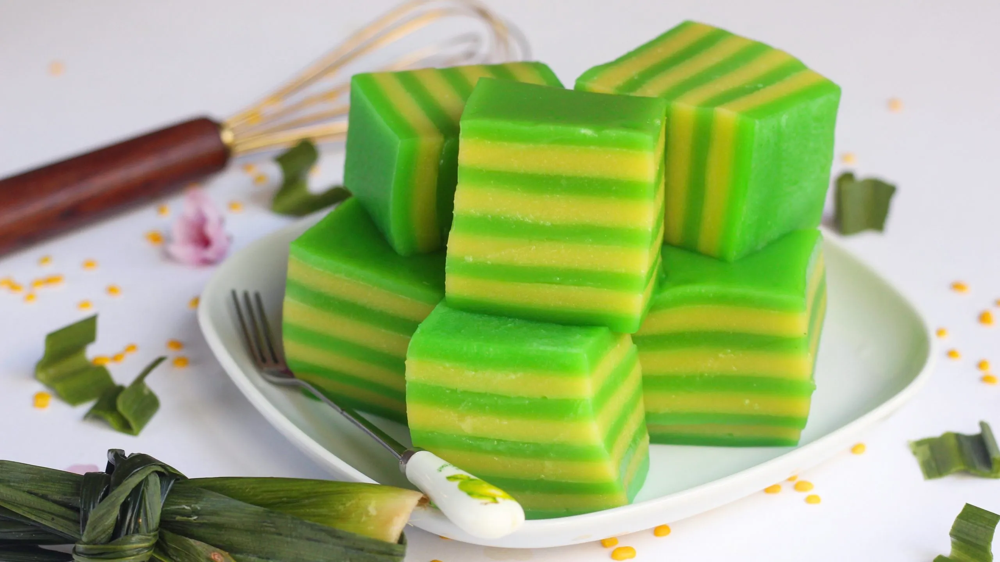

Pandan Layer Cake (Pandan Kueh Lapis)

Pandan steamed layer cake in alternating green and light green colors, but the color choice is yours!
Description
Simple and easy to make, Kueh Lapis is a steamed cake dish originating from Indonesia. This recipe specifically uses pandan for all layers of flavoring in addition to the coconut base, and for the colors, the choice is yours!
When making Kueh Lapis, patience is key; let each layer set (will give tips on how to determine that below) before you add the next. The process is relatively low maintenance as well: just ladle the layers one at a time, and leave it to steam before progressing to the next.
Ingredients
- 300 mL Coconut Milk
- 180 grams Fine Sugar
- 1/2 tsp Pandan Essence
- 260 mL Boiling Water
- 200 grams Tapioca Flour
- 20 grams Rice Flour
Steps
- Start heating your water to a slow boil.
- Once the water is boiling, add it to your sugar to melt it, in addition to the salt and pandan essence.
- Add in your coconut milk to cool the mixture. You'll want to cool this down from boiling because if it's too hot, it'll cook some of the flour, leading to a clumpy mixture.
- Add in both of your flours, and mix well.
- Optionally, if you would like different colors, you can separate mixtures into separate bowls to add food coloring to.
- Set up your steamer, and once it is ready, pour your first layer (cover the bottom and a little more). This initial layer will be a little thicker to assist with easier removal of the cake at the end.
- After 10 minutes of steaming, check if the layer is ready. You can determine this by touching the back of a spoon to the surface: if it sticks, wait a little longer, but if it doesn't you can add your next layer.It is up to your preference how thick you enjoy your layers, but I recommend trying it on the thinner side—just enough to cover the surface each time (this lets you can peel it layer by layer when you eat it).
- Keep adding layers until your batter is used up our your container is full. Make sure to refill your steamer's water once in a while so that it doesn't cook dry!
Enjoy your pandan layer cake!
Recipe Credit: Michael Lim's Kueh Lapis on Youtube
Find more recipes